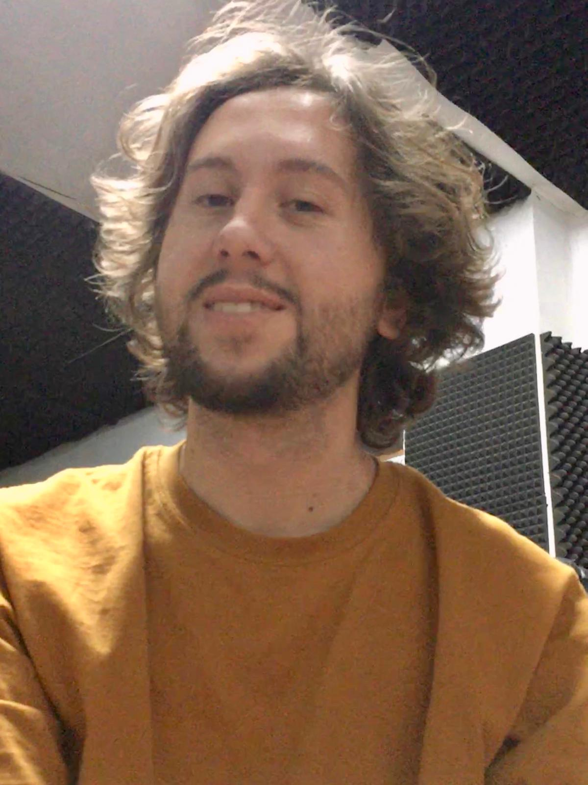

¿Y qué y quién hay detrás de estas MAGNÍFICAS obras?
Las bases de datos se alojan en los servicios de Firebase, que simplifica mucho el proceso.
El sonido y música ha sido desarrollado con y paquetes de unity de terceros. Los gráficos fueron modelados con MagicaVoxel.
El motor con el que se desarrollan los juegos es con Unity, ¿por qué? Porque es más intuitivo, sencillo...
Es broma, lo que ocurre es que es gratuito hasta que te montas en el dólar, lo cual es un detalle.
Este señor tan hermoso es Alberto Martí, es el desarollador de los tremendos juegazos
top seller expuestos en esta página, también lo es de esta página web,
gran parte de los gráficos, el sonido, la música...
